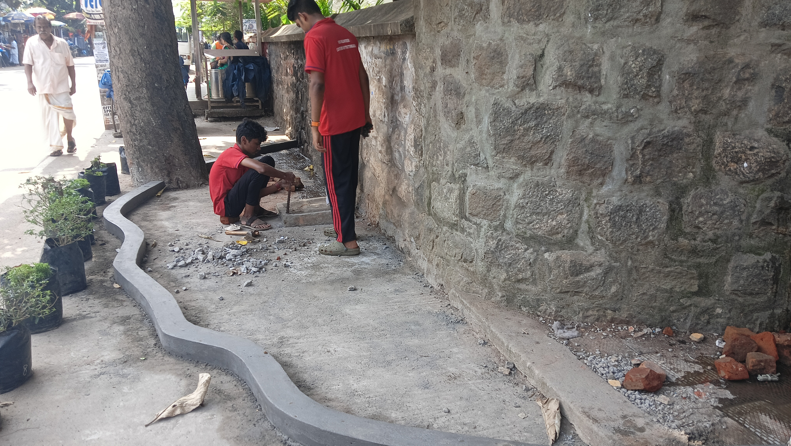
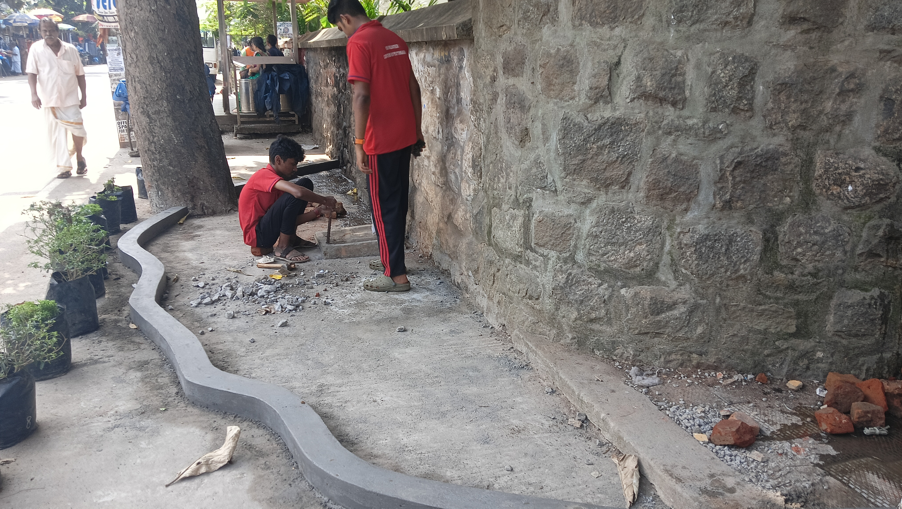

By NSS 2023-25 GHSS NEYYATTINKARA
“സ്നേഹാരാമം" - പ്രവര്ത്തനങ്ങള്
* മാലിന്യമുക്തം നവകേരളം” പരിപാടിയുടെ ഭാഗമായി മാലിന്യങ്ങള് വലിച്ചെറിയുന്ന
ഇടങ്ങള് പഞ്ചായത്ത് സംവിധാനങ്ങളുടെ സഹായത്തോടെ വൃത്തിയാക്കുകയും
അവിടം സന്ദര്യവല്ക്കരിച്ച് അവിടങ്ങളില് തുടര്ന്ന് മാലിന്യം വലിച്ചെറിയാത്ത
രീതിയില് മാറ്റിയെടുക്കുന്നതുമായ പ്രവര്ത്തനം.
പ്രാദേശികമായ സവിശേഷതകള് ഉള്ക്കൊള്ളിച്ചുകൊണ്ട് സ്നേഹാരാമങ്ങള് നിര്മ്മി
ക്കാവുന്നതാണ്. പച്ചത്തുരുത്ത്, ചുമര് ചിത്രം, വെര്ട്ടിക്കല് ഗാര്ഡന്, പാര്ക്ക്, തണ
ലിടം (വിശ്രമസംവിധാനം) സ്ക്രാപ്/ അജൈവ പാഴ്വസ്തുക്കള്കൊണ്ടുള്ള ഇന്സ്റ്റ
ലേഷന് എന്നിങ്ങനെ വോളന്റിയര്മാരുടെ സര്ഗ്ഗാത്മകത കാഴ്ചവയ്ക്കുന്ന രീതി
യില് “സ്നേഹാരാമം' പ്രവര്ത്തനങ്ങള് സംഘടിപ്പിക്കാവുന്നതാണ്. അധികം പരി
ചരണം ആവശ്യമില്ലാത്ത ചെടികള് ഇതിനായി തിരഞ്ഞെടുക്കാവുന്നതാണ്. പ്രദേ
ശത്ത് നിരീക്ഷണകമ്മറ്റി രൂപീകരിച്ച് പ്രവര്ത്തനങ്ങള് വിലയിരുത്തേണ്ടതാണ്. 2024
ജനുവരി ഒന്നിന് സപ്തദിന ക്യാമ്പുമായി ബന്ധപ്പെട്ട് എല്ലാ എന്.എസ്.എസ്. യൂണി
റ്ലുകളും തയ്യാറാക്കിയ സ്നേഹാരാമങ്ങള് ജനപ്രതിനിധികളുടെയും നാട്ടുകാരുടെയും
സാന്നിദ്ധ്യത്തില് സമര്പ്പിക്കാന് ആവശ്യമായ ക്രമീകരണങ്ങള് ക്യാമ്പിനോടനുബ
ന്ധിച്ച് നടത്തേണ്ടതാണ്.
പൊതുഇടങ്ങള് ശുചിയായി സംരക്ഷിക്കാനും മാലിന്യങ്ങള് നിക്ഷേപിക്കാതിരിക്കാ
നുമുള്ള സന്ദേശം പ്രചരിപ്പിക്കുന്ന തെരുവുനാടകങ്ങള് /ഫ്ളാഷ് മോബുകള് തുട
ങ്ങിയവ ക്യാമ്പിന്റെ ഭാഗമായി സ്നേഹാരാമം സ്ഥാപിക്കുന്ന പ്രദേശങ്ങളില് സംഘ
ടിപ്പിക്കേണ്ടതാണ്.
യൂണിറ്റുകള്ക്ക് തദ്ദേശസ്വയംഭരണ സ്ഥാപനങ്ങള് സ്നേഹാരാമം നിര്മ്മിക്കാന്
സ്ഥലം അനുവദിച്ച ഇടങ്ങളോട് ചേര്ന്ന് ക്യാമ്പിനായി സ്കൂളുകള് തിരഞ്ഞെടു
ക്കാന് പരമാവധി ശ്രദ്ധിക്കേണ്ടതാണ്. അത്തരത്തില് ക്യാമ്പിടങ്ങള് തിരഞ്ഞെടു
ക്കാന് കഴിയാത്ത യൂണിറ്റുകള് ക്യാമ്പ് പ്രദേശത്ത് പ്രാദേശിക സ്വയംഭരണ സംവി
ധാനത്തിന്റെ സഹകരണത്തോടെ സ്നേഹാരാമം നിര്മ്മിക്കാന് ആവശ്യമായ ക്രമീ
കരണം ചെയ്യേണ്ടതാണ്.
ക്യാമ്പിന്റെ തുടക്കത്തിനുമുന്പുതന്നെ ഇതു സംബന്ധിച്ച് ആവശ്യമായ ചര്ച്ചകള്
സംഘടിപ്പിക്കുകയും സ്പോണ്സര്മാരെ കണ്ടെത്തിയും പ്രാദേശികമായ ഇടപെട
ലുകളിലൂടെയും “സ്നേഹാരാമം” മനോഹരമാക്കുന്നതിന് ആവശ്യമായ ക്രമീകരണം
പ്രോഗ്രാം ഓഫീസര്മാരുടെ നേതൃത്വത്തില് നടത്തേണ്ടതാണ്.
സ്നേഹാരാമങ്ങള് സ്ഥാപിക്കുന്നതിനുമുന്പ് തിരഞ്ഞെടുത്ത സ്ഥലത്തിന്റെയും
സ്നേഹാരാമം സ്ഥാപിച്ചതിനുശേഷമുള്ളതുമായ ചിത്രങ്ങള് എല്ലാ യൂണിറ്റുകളും
ഇതിനായി ജില്ലാ തലത്തില് നല്കുന്ന ലിങ്കില് അപ് ലോഡ് ചെയ്യേണ്ടതാണ്.
സമനമ്പയം-2023 ക്യാമ്പിന്റെ 3 മുതല് 4 ദിവസം സ്നേഹാരാമവുമായി ബന്ധപ്പെട്ട പ്രവര്ത്തനങ്ങള്ക്കായി മാനുവല് പ്രവര്ത്തനങ്ങള് നീക്കി വയ്ക്കാവുന്നതാണ്.
സ്നേഹാരാമം നിര്മ്മിക്കുന്ന ഇടങ്ങള് ഗൂഗിള് മാപ്പില് സ്പോട്ട് ചെയ്ത് ഫോട്ടോ
ഉള്പ്പെടെ അപ് ലോസ് ചെയ്യേണ്ടതാണ്. ഈ ല്രരകിയയുടെ ഹെല്പ്പ് ഫയല് എന്.
എസ്.എസ്. സെല്ലില് നിന്നും നല്കുന്നതാണ്.
SPECIAL THANKS TO ..


 
